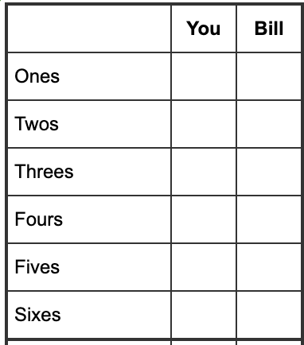

HW1
要求:

Rule:
- 6 categories
- Cannot re-roll
Purpose
- What's the optimal strategy.
- Expectation: Score | Optimal
- Minimum \(\rightarrow\) Simulation 10000 \(\rightarrow\) (score, count)柱状图
代码方案
import itertools
from functools import lru_cache
from math import factorial
from collections import Counter
# --- 1. 预计算骰子概率与组合 ---
def get_dice_probs(n_dice=5, sides=6):
"""
生成所有不重复的骰子组合（即不考虑顺序，例如 (1,1,2) 和 (2,1,1) 视为同一种手牌），
并计算每种手牌出现的概率。
"""
outcomes = []
total_combinations = sides ** n_dice
# 使用 combinations_with_replacement 生成所有排序后的手牌
# 这样大大减少了循环次数 (从 7776 减少到 252 种情况)
for hand in itertools.combinations_with_replacement(range(1, sides + 1), n_dice):
counts = Counter(hand)
# 计算多项式系数 (Multinomial Coefficient)
# 排列数 = n! / (n1! * n2! * ... * nk!)
denom = 1
for c in counts.values():
denom *= factorial(c)
num_permutations = factorial(n_dice) // denom
prob = num_permutations / total_combinations
outcomes.append((hand, prob))
return outcomes
# 获取所有可能的手牌及其概率
ALL_HANDS_AND_PROBS = get_dice_probs()
# --- 2. 计分逻辑 ---
def calculate_score(hand, category_index):
"""
计算特定手牌在特定格子的得分。
category_index: 0代表Ones(数一), 1代表Twos(数二)... 5代表Sixes(数六)
"""
target_num = category_index + 1
# 得分为：骰子中点数等于 target_num 的总和
return sum(d for d in hand if d == target_num)
# --- 3. 动态规划 (DP) ---
# 使用 lru_cache 进行记忆化 (Memoization)，避免重复计算相同状态
@lru_cache(maxsize=None)
def get_max_expected_score(mask):
"""
mask: 一个整数 (0-63)，二进制位表示某个类别是否已填。
第0位=1 表示 Ones 已填，第5位=1 表示 Sixes 已填。
返回: 在当前 mask 状态下，剩余回合能获得的【最大期望分数】。
"""
# Base Case: 如果所有6个位都为1 (mask = 111111 binary = 63 decimal)，游戏结束
if mask == (1 << 6) - 1:
return 0.0
expected_value = 0.0
# 对于每一种可能的骰子掷出结果 (Chance Node)
for hand, prob in ALL_HANDS_AND_PROBS:
best_choice_value = -1.0
# 尝试填入每一个还未被填写的格子 (Decision Node)
for category in range(6):
# 检查第 category 位是否为 0 (即未填)
if not (mask & (1 << category)):
# 1. 计算当前这一步的得分
current_score = calculate_score(hand, category)
# 2. 计算填入该格后的未来状态的期望价值 (递归调用)
future_mask = mask | (1 << category)
future_value = get_max_expected_score(future_mask)
# 3. 策略：选择 (当前得分 + 未来期望) 最大的那个格子
total_value = current_score + future_value
if total_value > best_choice_value:
best_choice_value = total_value
# 累加：概率 * 该手牌下的最佳策略价值
expected_value += prob * best_choice_value
return expected_value
# --- 4. 辅助函数：展示最佳策略 ---
def print_optimal_strategy_example(mask, hand):
"""
根据计算出的 DP 表，打印特定状态和手牌下的最佳决策
"""
print(f"\n[策略示例] 当前已填格子掩码: {bin(mask)}, 掷出骰子: {hand}")
best_cat = -1
max_val = -1
print(f"{'选项':<10} {'即时得分':<10} {'未来期望':<10} {'总价值':<10}")
print("-" * 45)
for category in range(6):
if not (mask & (1 << category)):
curr = calculate_score(hand, category)
fut = get_max_expected_score(mask | (1 << category))
total = curr + fut
cat_name = ["Ones", "Twos", "Threes", "Fours", "Fives", "Sixes"][category]
print(f"{cat_name:<10} {curr:<10} {fut:<10.4f} {total:<10.4f}")
if total > max_val:
max_val = total
best_cat = cat_name
print(f"-> 最佳决策: 填入 [{best_cat}]")
# --- 主程序 ---
if __name__ == "__main__":
# 计算初始状态 (mask=0) 的最大期望值
final_expectation = get_max_expected_score(0)
print("="*50)
print(f"最佳策略下的总分数学期望 (Expectation): {final_expectation:.4f}")
print("="*50)
# 举例演示策略
# 假设游戏刚开始，我们掷出了 (2, 2, 5, 5, 6)
# 直觉可能想填 Fives (10分)，但最佳策略可能为了保留高分项而填 Twos
print_optimal_strategy_example(0, (2, 2, 5, 5, 6))
代码详解
get_dice_probs()
def get_dice_probs(n_dice=5, sides=6):
"""
生成所有不重复的骰子组合（即不考虑顺序，例如 (1,1,2) 和 (2,1,1) 视为同一种手牌），
并计算每种手牌出现的概率。
"""
outcomes = []
total_combinations = sides ** n_dice
# 使用 combinations_with_replacement 生成所有排序后的手牌
# 这样大大减少了循环次数 (从 7776 减少到 252 种情况)
for hand in itertools.combinations_with_replacement(range(1, sides + 1), n_dice):
counts = Counter(hand)
# 计算多项式系数 (ggMultinomial Coefficient)
# 排列数 = n! / (n1! * n2! * ... * nk!)
denom = 1
for c in counts.values():
denom *= factorial(c)
num_permutations = factorial(n_dice) // denom
prob = num_permutations / total_combinations
outcomes.append((hand, prob))
return outcomes
(1,2,3,4,5) 和 (5,4,3,2,1) 算作两个不同的情况。
- 组合法（这段代码的方法）： 只遍历“不重复的组合”（252 种情况），例如 (1,2,3,4,5)，然后用数学公式算出这个组合包含了多少种排列。(隔板法\(\binom{n+k-1}{k}=\binom{10}{5}\))(见 2. Combinatorial Methods)
- 生成组合(The loop)
combinations_with_replacement: 这个函数生成的是“有序且允许重复”的组合。- 它视
(1, 2, 3)和(3, 2, 1)为同一种手牌，只返回排序后的一种（通常是(1, 2, 3)）。 -
作用：它将我们需要遍历的状态空间从 7776 (即 \(6^5\)) 压缩到了 252 种唯一的“骰型”。
-
统计重复数字 (Counter)
- 作用：统计当前这把手牌里，每个数字出现了几次。
- 例子：如果手牌是
(1, 1, 2, 5, 5)：counts会变成{1: 2, 2: 1, 5: 2}(1出现了2次，2出现了1次，5出现了2次)。
-
这是为了下一步计算排列数做准备。
-
计算多项式系数 (The Math Core)
这部分是在计算数学上的 多项式系数 (Multinomial Coefficient)。这是一个排列组合问题：“有重复元素的排列问题”。 - 公式：$\(N = \frac{n!}{n_1! \times n_2! \times \dots \times n_k!}\)$
- \(n\) 是总骰子数 (5)。
- \(n_i\) 是每个点数重复出现的次数。
factorial(c)计算c的阶乘，denom则记录分母
-
为什么要算这个？
虽然 combinations_with_replacement 只给了我们 (1, 1, 2, 5, 5) 这一次，但在真实的掷骰子过程中，这个组合出现的概率比 (1, 1, 1, 1, 1) 要高得多。 -
(1, 1, 1, 1, 1)只有 1 种掷法。 -(1, 1, 2, 5, 5)可以通过不同的骰子顺序掷出来（例如第一个骰子是2，或者第三个骰子是2）。我们需要算出它有多少种排列方式 -
代入例子
(1, 1, 2, 5, 5)：- 总数 \(n=5\)，所以分子是 \(5! = 120\)。
- 重复次数：1有2个，2有1个，5有2个。
- 分母
denom= \(2! \times 1! \times 2! = 2 \times 1 \times 2 = 4\)。 - 排列数
num_permutations= \(120 / 4 = 30\)。 - 这意味着在7776种原始结果中，有30种结果对应这个牌型。
-
计算概率 (Probability)
total_combinations：是 \(6^5 = 7776\)。prob：该手牌出现的真实概率。- 继续上面的例子：
(1, 1, 2, 5, 5)的概率是 \(30 / 7776 \approx 0.38\%\)。 - 相比之下,
(1, 1, 1, 1, 1)的概率是 \(1 / 7776 \approx 0.012\%\)。
- 继续上面的例子：
DP & get_max_expected_score()
@lru_cache(maxsize=None)
def get_max_expected_score(mask):
"""
mask: 一个整数 (0-63)，二进制位表示某个类别是否已填。
第0位=1 表示 Ones 已填，第5位=1 表示 Sixes 已填。
返回: 在当前 mask 状态下，剩余回合能获得的【最大期望分数】。
"""
# Base Case: 如果所有6个位都为1 (mask = 111111 binary = 63 decimal)，游戏结束
if mask == (1 << 6) - 1:
return 0.0
expected_value = 0.0
# 对于每一种可能的骰子掷出结果 (Chance Node)
for hand, prob in ALL_HANDS_AND_PROBS:
best_choice_value = -1.0
# 尝试填入每一个还未被填写的格子 (Decision Node)
for category in range(6):
# 检查第 category 位是否为 0 (即未填)
if not (mask & (1 << category)):
# 1. 计算当前这一步的得分
current_score = calculate_score(hand, category)
# 2. 计算填入该格后的未来状态的期望价值 (递归调用)
future_mask = mask | (1 << category)
future_value = get_max_expected_score(future_mask)
# 3. 策略：选择 (当前得分 + 未来期望) 最大的那个格子
total_value = current_score + future_value
if total_value > best_choice_value:
best_choice_value = total_value
# 累加：概率 * 该手牌下的最佳策略价值
expected_value += prob * best_choice_value
return expected_value
它的工作原理是逆向递归（从后往前推）：如果不算出只剩最后一格怎么填，就算不出剩两格怎么填。 1. 记忆化 (Memoization)
-@lru_cache: 这是一个“装饰器”。它的作用是记笔记。
- 因为这是一个递归函数，同一个状态（比如 `mask=3`，即填了第一、二格）会被计算很多次。
- 如果没有这个装饰器，电脑会重复计算几百万次，速度极慢。有了它，算过一次 `get_max_expected_score(3)` 后，结果就会被存起来，下次直接查表，速度飞快。
-
mask(状态): 用一个整数, 0到63 (\(2^{6}\rightarrow\) 6 categories)代表棋盘状态。- 这是一个 位掩码 (Bitmask) 技巧。
- 比如二进制
000101(十进制5) 代表：第0格（Ones）和第2格（Threes）已经被填了，其他是空的。
-
终止条件 (Base Case)
1 << 6: 是 \(2^6 = 64\) (二进制1000000)。(1 << 6) - 1: 是 63 (二进制111111)。- 逻辑：如果
mask是111111，说明6个格子全填满了。 -
返回值：游戏结束，后面没有额外的分数为
0.0。 -
外层循环：面对随机 (Chance Node)
- 逻辑：现在轮到我们掷骰子了。我们无法控制掷出什么，所以必须遍历所有可能的骰子组合（即上一段代码算出的252种情况）。
hand: 当前假设掷出的骰子，比如(1, 1, 2, 3, 6)。prob: 掷出这把牌的概率。-
best_choice_value: 用于记录在这特定的手牌下，玩家做出的最聪明决定的价值。 -
内层循环：做出决策 (Decision Node)
- 逻辑：面对手牌
hand，玩家要思考：我填哪个格子最好？ -
mask & (1 << category): 这是一个位运算检查。- 意思是：检查
mask的第category位是不是 1。 not ...: 如果是 0（即这个格子是空的），我们才能填。即看现在这个格子填没填。
- 意思是：检查
-
核心公式 (Bellman Equation)
current_score: 如果我现在把这把牌填在category（比如Twos），我马上能得几分？future_mask: 填完后，棋盘状态就变了（把对应位标记为1）。future_value: 关键点！ 这里调用了函数自己（递归）。它在问：“进入这个新状态后，一直玩到游戏结束，我平均还能再拿多少分？”-
total_value: 眼前的分 + 未来的期望分。 -
选择最优解 (Optimization)
- 逻辑：我们在所有可填的格子中比较。
- 比如填 Ones 总价值 20分，填 Sixes 总价值 25分。作为理性玩家，如果不傻，肯定选价值最高的那个（25分）。
-
best_choice_value最终锁定了“在这把手牌下，理性的最高收益”。 -
汇总期望值 (Expectation Aggregation)
- 逻辑：我们刚才算出的是某一种手牌下的最高分。但现实中，每种手牌出现的概率不同。
- 期望值公式：\(E = \sum (P_i \times V_i)\)
- 概率 (
prob) \(\times\) 该情况下的最优值 (best_choice_value)。
- 概率 (
- 把所有252种情况加权累加，就是当前状态
mask下的最终数学期望。
simulate_one_game():
def simulate_one_game():
"""
模拟一局完整的游戏
"""
mask = 0
total_score = 0
# 游戏共 6 回合
for _ in range(6):
# 1. 随机掷骰子 (生成 5 个 1-6 的随机数)
# 注意：这里模拟真实投掷，所以用 random.choices
roll = tuple(sorted(random.choices(range(1, 7), k=5)))
# 2. 询问最佳策略
category = get_optimal_move(mask, roll)
# 3. 执行操作
score = calculate_score(roll, category)
total_score += score
mask |= (1 << category) # 标记该格已填
return total_score
-
初始化游戏状态
-
游戏循环
这是代码中唯一引入随机性的地方，模拟了真实的物理世界： -
range(1, 7): 代表骰子的6个面 (1, 2, 3, 4, 5, 6)。 -
random.choices(..., k=5): 从这6个数中随机抽取5次。- 注意这里用的是
choices(带放回抽样)，因为骰子之间是独立的，可能掷出(1, 1, 1, 1, 1)。
- 注意这里用的是
-
sorted(...): 排序是非常关键的一步。- 在我们的 DP 算法中，为了减少计算量，我们将
(1, 2, 3, 4, 5)和(5, 4, 3, 2, 1)视为同一种手牌（状态）。 - 为了让模拟器生成的数据能被 DP 算法识别，必须将骰子结果排序成标准格式。
- 在我们的 DP 算法中，为了减少计算量，我们将
-
tuple(...): 转换为元组，因为元组是不可变的，且通常作为字典或缓存的键（Key）。 -
第二步：咨询最佳策略
-
get_optimal_move会去查询之前计算好的 DP 表，对比所有可选格子的（当前得分 + 未来期望），然后告诉模拟器：“填第category个格子是数学上最划算的”。- _注意：这里模拟器没有任何思考，它只是无脑执行最优策略。
-
第三步：执行操作与更新状态
-
算分：根据当前骰子
roll和选择的category计算得分。例如骰子是(2,2,5,5,5)，选了Fives(索引4)，得分就是 15 分。 -
累加：把分数加到总分里。
-
更新 Mask (重要)：
-
1 << category: 把 1 左移category位。- 如果
category是 0 (Ones)，变成二进制000001。 - 如果
category是 2 (Threes)，变成二进制000100。
- 如果
-
mask |= ...(按位或运算): 把对应位置为 1。 -
例子：如果当前
mask是000001(已填Ones)，现在填了 Threes (000100)，运算后mask变为000101。这标记了该格子已被占用，下一回合就不能再填了。
-